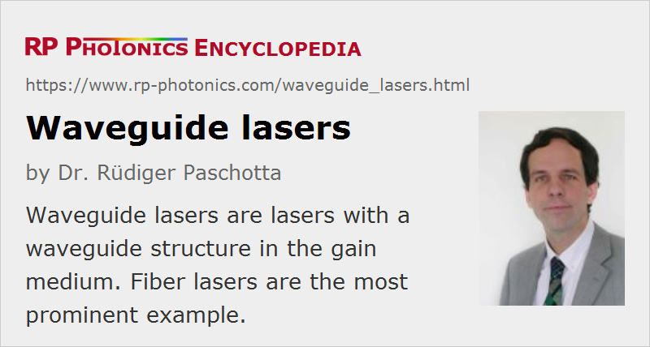

Waveguide Lasers
Definition: lasers with a waveguide structure in the gain medium
More general terms: lasers
More specific terms: planar waveguide lasers, channel waveguide lasers, fiber lasers
German: Wellenleiter-Laser
Categories: fiber optics and waveguides, lasers
How to cite the article; suggest additional literature
Author: Dr. Rüdiger Paschotta
A waveguide laser is a laser which contains a waveguide as the gain medium.
Types of Waveguide Lasers
There are very different types of waveguide lasers:
- Solid-state waveguide lasers are usually based on some planar or channel waveguides in some crystal or glass pieces.
- Fiber lasers are also waveguide lasers.
- Essentially all laser diodes are waveguide lasers, with optical guidance at least in one direction. The smaller laser diodes even use single-mode guidance; the larger ones (e.g. broad area laser diodes and diode bars) exhibit multimode behavior at least in one direction.
- Waveguide structures are also used in some CO2 lasers. The advantages are that the transverse dimensions of the gas tube can be reduced so as to obtain efficient cooling of the laser gas, and that the obtained beam quality can be very high.
Characteristic Properties of Waveguide Lasers
The most important benefit of using a waveguide is that effectively the beam divergence is removed, so that high optical intensities can be maintained over a long length. This in turn makes it possible to achieve a high optical gain and a high gain efficiency even for difficult laser transitions and with limited pump power. However, this benefit may partially be offset by propagation losses in the waveguide, which may be substantially higher than for bulk material.
The combination of a long propagation length and small mode area can cause a strong impact of nonlinearities of the material. This can limit the performance of certain devices, whereas in other cases nonlinear effects are exploited in some way. For example, Raman fiber lasers exploit strong stimulated Raman scattering.
Thermal effects such as thermal lensing in the gain media are largely suppressed by the waveguiding, particularly in the case of single-mode guidance. As thermal effects are usually weaker than the guiding index contrast, they lead only to a slight deformation of the guide mode, which has no significant consequences.
Waveguide lasers can be integrated with other optical elements on the same device, e.g. with optical modulators for Q switching, active mode locking, or wavelength tuning. This is particularly the case when the gain medium is a nonlinear crystal material such as lithium niobate (LiNbO3), or a semiconductor. A waveguide laser may even be part of a complex photonic integrated circuit.
An attraction of some planar waveguide lasers is that the pump light from a laser diode can be proximity coupled into the waveguide without any optics in between.
Waveguide lasers usually have a monolithic laser resonator, resulting in various advantages such as a stable and compact setup.
Suppliers
The RP Photonics Buyer's Guide contains 2 suppliers for waveguide lasers.
Questions and Comments from Users
Here you can submit questions and comments. As far as they get accepted by the author, they will appear above this paragraph together with the author’s answer. The author will decide on acceptance based on certain criteria. Essentially, the issue must be of sufficiently broad interest.
Please do not enter personal data here; we would otherwise delete it soon. (See also our privacy declaration.) If you wish to receive personal feedback or consultancy from the author, please contact him e.g. via e-mail.
By submitting the information, you give your consent to the potential publication of your inputs on our website according to our rules. (If you later retract your consent, we will delete those inputs.) As your inputs are first reviewed by the author, they may be published with some delay.
Bibliography
| [1] | E. Lallier, “Rare-earth-doped glass and LiNbO3 waveguide lasers and optical amplifiers”, Appl. Opt. 31 (25), 5276 (1992), doi:10.1364/AO.31.005276 |
| [2] | K. A. Winick, “Rare-earth-doped waveguide lasers in glass and LiNbO3: a review”, Proc. SPIE 3280, 88 (1998), doi:10.1117/12.305393 |
| [3] | C. Becker et al., “Advanced Ti:Er:LiNbO3 waveguide lasers”, J. Sel. Top. Quantum Electron. 6 (1), 101 (2000), doi:10.1109/2944.826878 |
| [4] | S. J. Hettrick et al., “Ion-exchanged tapered-waveguide laser in neodymium-doped BK7 glass”, Opt. Lett. 25 (19), 1433 (2000), doi:10.1364/OL.25.001433 |
| [5] | C. L. Bonner et al., “Double-clad structures and proximity coupling for diode-bar-pumped planar waveguide lasers”, IEEE J. Quantum Electron. 36 (2), 236 (2000), doi:10.1109/3.823470 |
| [6] | J. I. Mackenzie, “Dielectric solid-state planar waveguide lasers: a review”, J. Sel. Top. Quantum Electron. 13 (3), 26 (2007), doi:10.1109/JSTQE.2007.897184 |
| [7] | H. Byun et al., “Integrated low-jitter 400-MHz femtosecond waveguide laser”, IEEE Photon. Technol. Lett. 21 (12), 763 (2009), doi:10.1109/LPT.2009.2017505 |
| [8] | T. Calmano et al., “Nd:YAG waveguide laser with 1.3 W output power, fabricated by direct femtosecond laser writing”, Appl. Phys. B 100, 131 (2010), doi:10.1007/s00340-010-3929-6 |
| [9] | D. Geskus et al., “High-power, broadly tunable, and low-quantum-defect KGd1−xLux(WO4)2:Yb3+ channel waveguide lasers”, Opt. Express 18 (25), 26107 (2010), doi:10.1364/OE.18.026107 |
See also: waveguides, planar waveguides, integrated optics, photonic integrated circuits, monolithic solid-state lasers, lasers, laser diodes
and other articles in the categories fiber optics and waveguides, lasers
|  |
If you like this page, please share the link with your friends and colleagues, e.g. via social media:
These sharing buttons are implemented in a privacy-friendly way!